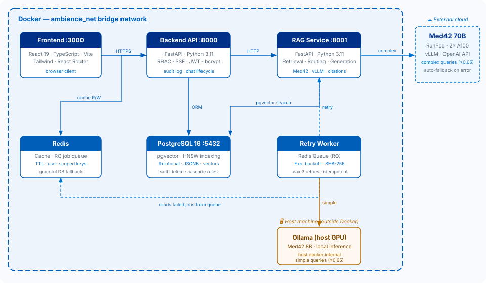
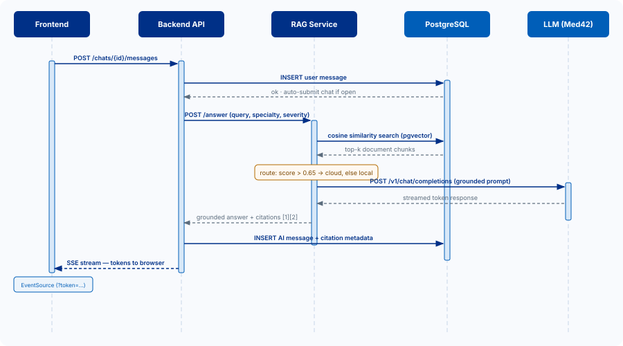
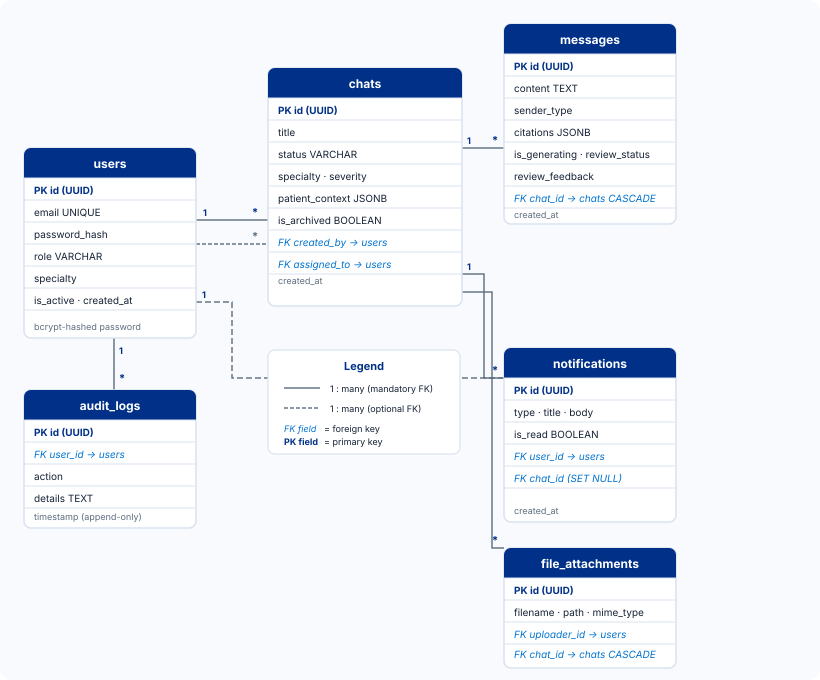

System Design
Service boundaries, request flow, and review workflow
Ambience-AI-1.5 is designed as a full-stack, multi-service application. The frontend, backend, RAG service, and pgvector database each own a distinct part of the runtime. The result is a system that can separate consultation state management from evidence retrieval and model execution.
Deployment topology
Ambience AI is built on a microservices architecture composed of three core backend services: a REST API backend, a dedicated RAG service, and a background retry worker. All services are containerised using Docker and communicate over an isolated ambience_net bridge network.
Compose-orchestrated architecture
Architecture diagram

Core services
Built with FastAPI (Python 3.11). Handles authentication, routing, and business logic across three RBAC roles: GP, Specialist, and Admin. Key responsibilities: JWT-based auth (8-day expiry, bcrypt hashing), chat lifecycle management (open → submitted → assigned → reviewing → approved/rejected), SSE-based AI response streaming, Redis-backed caching with user-scoped keys, and full audit logging for clinical compliance.
A standalone FastAPI service handling all AI inference. Receives queries from the backend, retrieves relevant medical evidence from the vector database, and generates grounded responses using the Med42 LLM. Exposes health check, retrieval, grounded answer, revision, and document-serving endpoints.
A Redis Queue (RQ)-based worker that processes failed RAG requests with exponential backoff (base 10 s, 2× multiplier, max 3 retries). SHA-256 hashing ensures idempotent retry deduplication, preventing duplicate AI responses from being stored on transient network failures.
Main request flow
Sequence diagram — GP message to AI response

Review workflow state machine
Consultation status progression
Message-level review overlays this chat-level state machine. Individual AI messages can carry their own review metadata, allowing specialists to reject or replace a single answer while keeping the broader consultation in progress.
Data model
PostgreSQL 16 serves as a polyglot database, handling three distinct data types in a single instance — eliminating the need for a separate vector database and keeping all data co-located for compliance.
| Feature | Mechanism |
|---|---|
| Relational data (users, chats, messages) | Standard tables with foreign keys |
| Semi-structured data (patient context, citations) | JSONB columns |
| Vector embeddings | pgvector extension with HNSW indexing |
| Entity | Purpose | Selected fields |
|---|---|---|
| User | Identity, role, specialty, and active-state management. | Email, password hash, role, specialty, is_active. |
| Chat | Consultation container and review state record. | Title, status, specialty, severity, patient_context, specialist assignment, review metadata. |
| Message | Conversation timeline including AI evidence. | Sender, content, citations, is_generating, review_status, review_feedback. |
| Notification | Workflow event delivery to users. | Type, title, body, chat reference, read state. |
| AuditLog | Security and workflow traceability. | User id, action, details, timestamp. |
| FileAttachment | Attachment metadata model for future upload workflows. | Filename, path, type, size, uploader, chat link. |
Entity–relationship diagram

Key schema decisions
- Soft deletion — Chats use an
is_archivedflag rather than hard deletes, preserving audit trails. - Enum-as-VARCHAR — Status enums are stored as VARCHAR (not native PostgreSQL ENUM types) for safe schema migrations without table rewrites.
- Cascade rules — Messages and files cascade-delete with their parent chat; notification foreign keys use
ON DELETE SET NULLto preserve notification history after a chat is removed.
RAG pipeline
/v1/chat/completions interface via vLLM, making the routing layer model-agnostic.
Caching strategy
| Cache target | TTL | Notes |
|---|---|---|
| Chat list | 30 s | Invalidated on any write to the user's chats. |
| Chat detail | 60 s | Invalidated on message add or status change. |
| User profile | 300 s | Invalidated on profile update. |
All cache keys are scoped per user ID to prevent cross-tenant data leakage. Pattern-based bulk invalidation ensures consistency on write operations. If Redis is unavailable the system falls back gracefully to direct database queries with no change in API behaviour.
Real-time streaming
AI responses are streamed to the frontend using Server-Sent Events (SSE), removing the need for polling and improving perceived latency. A shared stream state machine prevents duplicate or missed events when concurrent streams are active on the same consultation.
Tokens are accepted as query parameters on SSE endpoints to work around a browser limitation: the EventSource API cannot set custom request headers, so the JWT cannot be passed in the standard Authorization header. The backend validates the token from the query string and immediately rejects unauthenticated connections.
Security
All passwords are hashed with bcrypt before storage. Plain-text passwords are never written to the database or logs.
Tokens are validated on every protected request. 401 responses trigger automatic frontend logout. Tokens expire after 8 days.
Users can only access their own chats unless they are the assigned specialist. The backend enforces ownership checks at the query layer, not just the route layer.
Redis keys are namespaced per user ID, preventing information leakage between accounts even if cache entries share the same logical object type.
All user actions are written to an audit_logs table. Rows are append-only — no update or delete paths exist in the application layer.
API responsibilities by service
Authentication, registration, profile, chats, specialist review, notifications, admin metrics, and audit visibility.
Health checks, retrieval query endpoint, grounded answer endpoint, revision endpoint, and document-serving endpoint.
Client-side view composition for landing pages, auth pages, role-protected task flows, and dashboards.